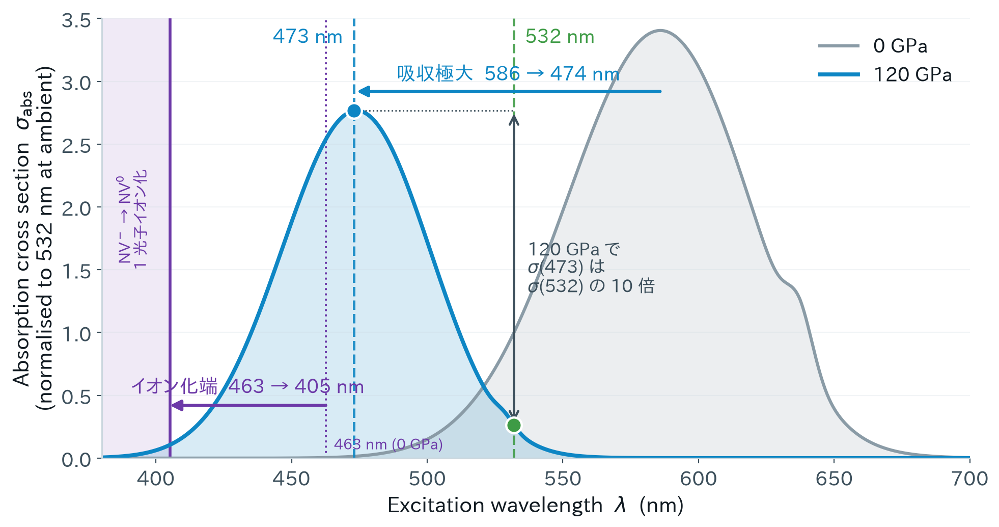
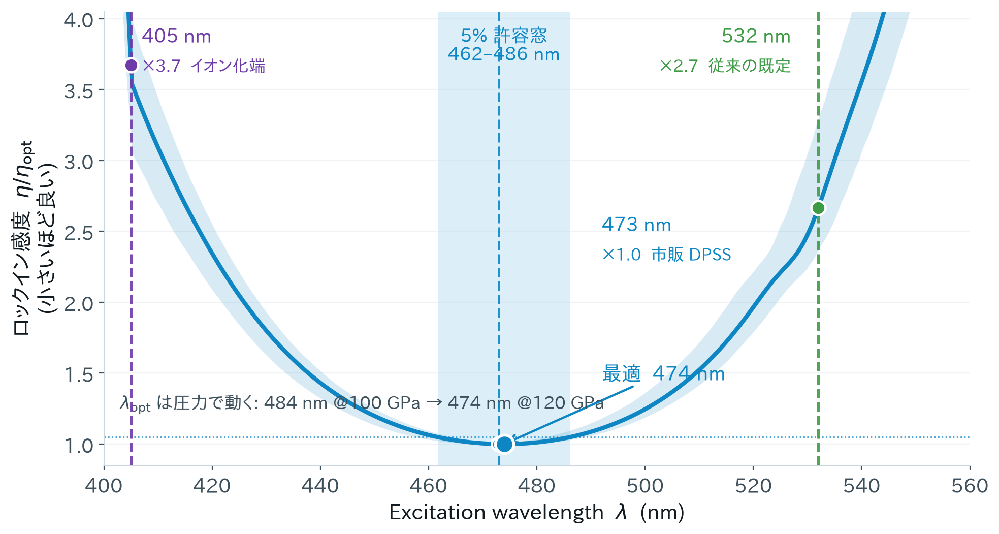
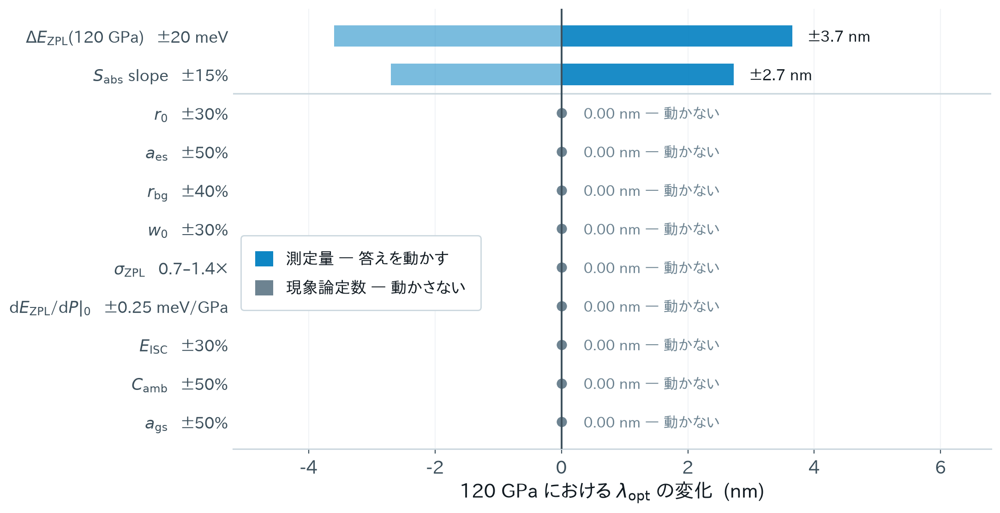
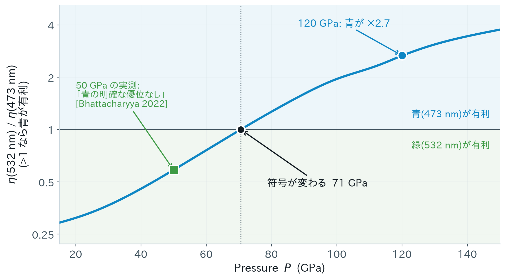

<title>474 nm at 120 GPa</title>
<style>
/* ==================================================================
   Palette is the subject: every categorical colour is the sRGB
   appearance of the laser line it labels (405 violet -> 532 green).
   The accent is 475 nm itself, the answer of the study.
   ================================================================== */
:root{
  --ground:#F1F4F6;
  --surface:#FFFFFF;
  --surface-2:#E6ECF0;
  --ink:#111A21;
  --ink-2:#3D505C;
  --muted:#6D8391;
  --rule:#CBD7DE;
  --accent:#0E86C4;      /* 475 nm */
  --accent-soft:#D6EDF9;
  --w405:#6D3AA8;
  --w457:#2159BE;
  --w473:#0E86C4;
  --w488:#0E9B92;
  --w532:#3E9B45;
  --bad:#B4432E;
  --shadow:0 1px 2px rgba(17,26,33,.06),0 8px 28px rgba(17,26,33,.07);

  --display:"Hiragino Mincho ProN","Yu Mincho","YuMincho","Noto Serif JP",
            "Iowan Old Style",Georgia,"Times New Roman",serif;
  --body:"Hiragino Kaku Gothic ProN","Yu Gothic","Noto Sans JP",
         -apple-system,BlinkMacSystemFont,"Segoe UI",system-ui,sans-serif;
  --mono:ui-monospace,SFMono-Regular,"SF Mono",Menlo,Consolas,monospace;
}
@media (prefers-color-scheme:dark){
  :root:not([data-theme="light"]){
    --ground:#0C1318;
    --surface:#131D24;
    --surface-2:#1B2830;
    --ink:#E6EEF3;
    --ink-2:#B3C6D1;
    --muted:#7E95A3;
    --rule:#26353F;
    --accent:#3FB6EF;
    --accent-soft:#12303F;
    --w405:#A279D8;
    --w457:#5E92E8;
    --w473:#3FB6EF;
    --w488:#3ACFC2;
    --w532:#63C46B;
    --bad:#E8735A;
    --shadow:0 1px 2px rgba(0,0,0,.4),0 10px 32px rgba(0,0,0,.35);
  }
}
:root[data-theme="dark"]{
  --ground:#0C1318;
  --surface:#131D24;
  --surface-2:#1B2830;
  --ink:#E6EEF3;
  --ink-2:#B3C6D1;
  --muted:#7E95A3;
  --rule:#26353F;
  --accent:#3FB6EF;
  --accent-soft:#12303F;
  --w405:#A279D8;
  --w457:#5E92E8;
  --w473:#3FB6EF;
  --w488:#3ACFC2;
  --w532:#63C46B;
  --bad:#E8735A;
  --shadow:0 1px 2px rgba(0,0,0,.4),0 10px 32px rgba(0,0,0,.35);
}

*{box-sizing:border-box;}
body{
  margin:0;background:var(--ground);color:var(--ink);
  font-family:var(--body);line-height:1.7;
  -webkit-font-smoothing:antialiased;
  scroll-snap-type:y mandatory;overflow-y:scroll;height:100vh;
}

/* ---------- slide frame ---------- */
.slide{
  scroll-snap-align:start;
  min-height:100vh;
  display:grid;
  grid-template-columns:clamp(56px,7vw,104px) 1fr;
  padding:clamp(28px,4.2vh,56px) clamp(24px,4vw,72px) clamp(28px,4.2vh,56px) 0;
  border-bottom:1px solid var(--rule);
}
.rail{
  display:flex;flex-direction:column;align-items:center;justify-content:space-between;
  border-right:1px solid var(--rule);padding:4px 0 4px;
}
.rail .num{
  font-family:var(--mono);font-size:11px;letter-spacing:.09em;
  color:var(--muted);font-variant-numeric:tabular-nums;
}
.rail .sect{
  writing-mode:vertical-rl;font-size:11px;letter-spacing:.24em;
  text-transform:uppercase;color:var(--muted);
}
.body{
  padding-left:clamp(20px,3vw,48px);
  display:flex;flex-direction:column;justify-content:center;gap:clamp(14px,2vh,26px);
  max-width:1180px;min-width:0;
}

/* ---------- type ---------- */
.eyebrow{
  font-family:var(--mono);font-size:12px;letter-spacing:.14em;
  text-transform:uppercase;color:var(--accent);margin:0;
}
h1{
  font-family:var(--display);font-weight:600;
  font-size:clamp(34px,5.4vw,68px);line-height:1.14;letter-spacing:-.015em;
  margin:0;text-wrap:balance;
}
h2{
  font-family:var(--display);font-weight:600;
  font-size:clamp(25px,3.3vw,42px);line-height:1.24;letter-spacing:-.01em;
  margin:0;text-wrap:balance;
}
h3{
  font-size:clamp(15px,1.5vw,18px);font-weight:700;margin:0;letter-spacing:.01em;
}
p{margin:0;font-size:clamp(14px,1.35vw,17px);color:var(--ink-2);max-width:70ch;}
.lede{font-size:clamp(16px,1.7vw,21px);color:var(--ink);max-width:56ch;}
strong{color:var(--ink);font-weight:700;}
.mono{font-family:var(--mono);font-variant-numeric:tabular-nums;}
.dim{color:var(--muted);}

/* ---------- components ---------- */
.cards{display:grid;grid-template-columns:repeat(auto-fit,minmax(230px,1fr));gap:clamp(12px,1.5vw,20px);}
.card{
  background:var(--surface);border:1px solid var(--rule);border-radius:3px;
  padding:clamp(16px,1.8vw,24px);display:flex;flex-direction:column;gap:9px;
  box-shadow:var(--shadow);
}
.card p{font-size:clamp(13px,1.2vw,15px);}

.stat{display:flex;flex-direction:column;gap:2px;}
.stat .v{font-family:var(--mono);font-size:clamp(26px,3.4vw,44px);line-height:1;
  font-variant-numeric:tabular-nums;letter-spacing:-.02em;}
.stat .k{font-size:12px;letter-spacing:.05em;color:var(--muted);}

.tablewrap{overflow-x:auto;}
table{border-collapse:collapse;width:100%;font-size:clamp(13px,1.25vw,16px);}
th,td{text-align:left;padding:10px 14px;border-bottom:1px solid var(--rule);vertical-align:top;}
th{font-size:12px;letter-spacing:.07em;text-transform:uppercase;color:var(--muted);font-weight:600;
  border-bottom:1px solid var(--ink-2);}
td.n{font-family:var(--mono);font-variant-numeric:tabular-nums;white-space:nowrap;}
tr.hi td{background:var(--accent-soft);}
tr.hi td:first-child{box-shadow:inset 3px 0 0 var(--accent);}

.chip{
  display:inline-flex;align-items:center;gap:6px;font-family:var(--mono);font-size:12px;
  padding:2px 9px;border-radius:2px;border:1px solid currentColor;white-space:nowrap;
}
.sw{width:8px;height:8px;border-radius:50%;background:currentColor;flex:none;}
.c405{color:var(--w405);} .c457{color:var(--w457);} .c473{color:var(--w473);}
.c488{color:var(--w488);} .c532{color:var(--w532);} .cbad{color:var(--bad);}

.split{display:grid;grid-template-columns:1fr 1fr;gap:clamp(18px,2.6vw,40px);align-items:start;}
@media (max-width:900px){.split{grid-template-columns:1fr;}}

.push{border-left:2px solid var(--accent);padding-left:clamp(14px,1.6vw,22px);}
.figbox{background:var(--surface);border:1px solid var(--rule);border-radius:3px;padding:12px;box-shadow:var(--shadow);}
.figbox img{display:block;width:100%;height:auto;}
figcaption{font-size:12.5px;color:var(--muted);margin-top:8px;}

svg{display:block;width:100%;height:auto;}
.axis{stroke:var(--rule);stroke-width:1;}
.gl{stroke:var(--rule);stroke-width:1;stroke-dasharray:2 4;}
.lbl{font-family:var(--mono);font-size:11px;fill:var(--muted);}
.lbl-i{font-family:var(--mono);font-size:11.5px;fill:var(--ink-2);}

.steps{display:flex;flex-direction:column;gap:clamp(10px,1.4vh,18px);}
.step{display:grid;grid-template-columns:auto 1fr;gap:16px;align-items:baseline;}
.step .mk{font-family:var(--mono);font-size:12px;color:var(--accent);letter-spacing:.08em;padding-top:3px;}

a{color:var(--accent);}
:focus-visible{outline:2px solid var(--accent);outline-offset:3px;}
@media (prefers-reduced-motion:reduce){*{scroll-behavior:auto !important;}}

/* ---------- print / PDF ---------- */
@media print{
  body{height:auto;overflow:visible;background:#fff;color:#000;}
  .slide{min-height:auto;page-break-after:always;border-bottom:none;padding:14mm 12mm;}
  .figbox,.card{box-shadow:none;}
}
</style>

<!-- ================================================================ 1 -->
<section class="slide">
  <div class="rail"><span class="num">01</span><span class="sect">Claim</span></div>
  <div class="body">
    <p class="eyebrow">8-minute talk · 2026-08 · R. Abe</p>
    <h1>120 GPa の ODMR は<br>474 nm で測るべきである</h1>
    <p class="lede">水素化物超伝導の局所磁気イメージングを律速しているのは
    「ODMR が高圧で生き残るか」ではなく<strong>感度</strong>である。
    その感度は、常圧から受け継いだ 1 つの選択——励起波長——でほぼ決まっている。</p>
    <div class="cards" style="max-width:1000px">
      <div class="card stat"><span class="v" style="color:var(--accent)">474 nm</span><span class="k">120 GPa での最適励起波長（5% 窓 462–486 nm）</span></div>
      <div class="card stat"><span class="v" style="color:var(--accent)">×2.7</span><span class="k">532 nm に対する感度の改善</span></div>
      <div class="card stat"><span class="v" style="color:var(--accent)">×7</span><span class="k">磁気マップ 1 枚の取得時間</span></div>
    </div>
    <p class="push"><strong>市販の 473 nm DPSS で買える。</strong>最適からの損失は 0.03%。
    レーザーを 1 本替えるだけで、装置構成の変更を伴わない。</p>
  </div>
</section>

<!-- ================================================================ 2 -->
<section class="slide">
  <div class="rail"><span class="num">02</span><span class="sect">Why it matters</span></div>
  <div class="body">
    <p class="eyebrow">問題設定</p>
    <h2>感度は指標ではない。分解能を買う通貨である</h2>
    <div class="split">
      <div style="display:flex;flex-direction:column;gap:clamp(12px,1.6vh,20px)">
        <p>水素化物超伝導の決定実験は、抵抗の落下ではなく<strong>局所磁気マップ</strong>になった。
        CeH<sub>9</sub> の Meissner 効果と捕捉磁束の撮像（Bhattacharyya <em>et al.</em>, Nature 627, 73 (2024)）は、
        超伝導領域がミクロンスケールで強く不均一であることを示した。</p>
        <p>マップは ODMR スペクトルのラスターである。したがって</p>
        <div class="card" style="align-items:center;background:var(--surface-2)">
          <span class="mono" style="font-size:clamp(15px,1.7vw,21px)">測定時間 ∝ 画素数 / η<sub>B</sub><sup>2</sup></span>
        </div>
        <p>1 回のロードに数週間、1 回のアンビル破損で全損する領域では、
        感度は<strong>空間分解能・視野・到達できる (P, T) 点数のすべてを買う通貨</strong>になる。</p>
      </div>
      <div class="cards" style="grid-template-columns:1fr">
        <div class="card">
          <h3>問いは移動した</h3>
          <p>「高圧で ODMR は生き残るか」——生き残る。Ho <em>et al.</em> (2026) が 120 GPa まで
          光物性を確定した。残る問いは<strong>どうすれば最も速く測れるか</strong>。</p>
        </div>
        <div class="card">
          <h3>感度 ×2.7 の意味</h3>
          <p>同じマップが 1/7 の時間で撮れる。あるいは同じ時間で 7 倍の画素、
          または 7 点の (P, T) を回せる。</p>
        </div>
        <div class="card">
          <h3>選択は 1 つだけ</h3>
          <p>アンビル形状を決めた後、感度をここまで動かせる自由度は
          <strong>励起波長</strong>しか残っていない。そしてそれは常圧の慣習のまま
          532 nm に固定されている。</p>
        </div>
      </div>
    </div>
  </div>
</section>

<!-- ================================================================ 3 -->
<section class="slide">
  <div class="rail"><span class="num">03</span><span class="sect">Why non-trivial</span></div>
  <div class="body">
    <p class="eyebrow">なぜ自明でないか</p>
    <h2>120 GPa では 2 つの端が窓を挟み込む</h2>
    <div class="split" style="grid-template-columns:1.72fr 1fr">
      <figure class="figbox" style="margin:0">
        
        <figcaption>Ho <em>et al.</em>, arXiv:2606.02399 (2026) の DFT + DAC 実測値を入力とした Franck–Condon 包絡。
        灰色の常圧曲線は単一有効フォノン近似のため 50 GPa 以下では粗く、<strong>シフトの図示</strong>であって常圧の予言ではない。</figcaption>
      </figure>
      <div class="cards" style="grid-template-columns:1fr">
        <div class="card">
          <h3 style="color:var(--accent)">青くする → 得</h3>
          <p>ZPL が <span class="mono">+0.40 eV</span> 青方偏移し、Huang–Rhys 因子が
          <span class="mono">3.08 → 4.61</span> に増える。吸収極大は
          <span class="mono">586 → 474 nm</span>。120 GPa では σ(473) は σ(532) の <strong>10 倍</strong>。</p>
        </div>
        <div class="card">
          <h3 style="color:var(--w405)">青くする → 損</h3>
          <p>IP(³A₂) も <span class="mono">2.68 → 3.06 eV</span> に上がる。
          3.06 eV = 405 nm。これより青は NV⁻ を直接 NV⁰ に変え、
          f₋ を削りコントラストを薄める。</p>
        </div>
        <div class="card">
          <h3>だから目視では決まらない</h3>
          <p>η ∝ Δν/(C√R) はコントラストに<strong>線形</strong>、光子レートに<strong>√</strong>で効く。
          釣り合いの位置は量的問題であり、吸収スペクトルを眺めても答えは出ない。</p>
        </div>
      </div>
    </div>
  </div>
</section>

<!-- ================================================================ 4 -->
<section class="slide">
  <div class="rail"><span class="num">04</span><span class="sect">The answer</span></div>
  <div class="body">
    <p class="eyebrow">答え</p>
    <h2>474 nm。市販の 473 nm でよい</h2>
    <div class="split" style="grid-template-columns:1.72fr 1fr">
      <figure class="figbox" style="margin:0">
        
        <figcaption>帯は現象論定数のモンテカルロ 16–84%。λ<sub>opt</sub> = 474.0 <span class="mono">+3.7 / −4.3</span> nm。</figcaption>
      </figure>
      <div style="display:flex;flex-direction:column;gap:clamp(12px,1.6vh,20px)">
        <div class="tablewrap">
          <table>
            <thead><tr><th>レーザー線</th><th style="text-transform:none;font-size:13px">η / η<sub>opt</sub></th><th></th></tr></thead>
            <tbody>
              <tr><td><span class="chip c405"><span class="sw"></span>405 nm</span></td><td class="n">3.67</td><td>イオン化端</td></tr>
              <tr><td><span class="chip c457"><span class="sw"></span>457 nm</span></td><td class="n">1.10</td><td>窓の内側</td></tr>
              <tr class="hi"><td><span class="chip c473"><span class="sw"></span>473 nm</span></td><td class="n">1.00</td><td><strong>市販 DPSS・実質最適</strong></td></tr>
              <tr><td><span class="chip c488"><span class="sw"></span>488 nm</span></td><td class="n">1.07</td><td>窓の内側</td></tr>
              <tr><td><span class="chip c532"><span class="sw"></span>532 nm</span></td><td class="n">2.66</td><td>従来の既定</td></tr>
            </tbody>
          </table>
        </div>
        <div class="push">
          <h3>圧力ごとに選び直す</h3>
          <p>λ<sub>opt</sub> は ZPL に追随して <span class="mono">0.5 nm/GPa</span> で動く。
          100 GPa では 484 nm。(La,Ce)H<sub>9</sub> の 97–172 GPa を通す実験なら、
          単一の妥協線より <strong>488 nm（〜110 GPa 以下）と 473 nm（以上）の 2 本</strong>が有利。</p>
        </div>
      </div>
    </div>
  </div>
</section>

<!-- ================================================================ 5 -->
<section class="slide">
  <div class="rail"><span class="num">05</span><span class="sect">Why believe it</span></div>
  <div class="body">
    <p class="eyebrow">なぜ信じられるか</p>
    <h2>フィットできる量は、答えを 1 nm も動かさない</h2>
    <div class="split" style="grid-template-columns:1.72fr 1fr">
      <figure class="figbox" style="margin:0">
        
        <figcaption>各入力をモンテカルロ範囲の端に振り、他を公称値に固定したときの λ<sub>opt</sub> の変化。</figcaption>
      </figure>
      <div class="cards" style="grid-template-columns:1fr">
        <div class="card">
          <h3 style="color:var(--accent)">相殺が効いている</h3>
          <p>励起状態イオン化と再結合は<strong>どちらも σ<sub>abs</sub> に比例する</strong>ので、
          定常 NV⁻ 分率 f₋ から 0.2% の精度で相殺する。
          結果、固定パワーでの最適は<strong>吸収極大そのもの</strong>になる。</p>
        </div>
        <div class="card">
          <h3>答えを決めているのは測定量だけ</h3>
          <p>ZPL 位置と電子格子結合——どちらも他人が測った量。
          a<sub>gs</sub>, a<sub>es</sub>, r₀, r<sub>bg</sub>, w₀, C<sub>amb</sub>, E<sub>ISC</sub> …
          校正でフィットする定数は<strong>1 つも効かない</strong>。</p>
        </div>
        <div class="card">
          <h3>追加調整なしで 26/26</h3>
          <p>0–150 GPa・4 波長にわたる既発表観測を再現。うち 4 件は較正アンカー、
          1 件は「効果が見つからなかった」という null 結果、1 件は未再現として申告。</p>
        </div>
      </div>
    </div>
  </div>
</section>

<!-- ================================================================ 6 -->
<section class="slide">
  <div class="rail"><span class="num">06</span><span class="sect">Falsifiable</span></div>
  <div class="body">
    <p class="eyebrow">反証条件</p>
    <h2>推奨は約 70 GPa で逆転する</h2>
    <div class="split" style="grid-template-columns:1.72fr 1fr">
      <figure class="figbox" style="margin:0">
        
        <figcaption>同一圧力・同一励起での比。1 より上なら青、下なら緑が有利。</figcaption>
      </figure>
      <div class="cards" style="grid-template-columns:1fr">
        <div class="card">
          <h3 style="color:var(--w532)">50 GPa の null 結果を再現する</h3>
          <p>Bhattacharyya (2022) は 50 GPa で青と緑を比較し、
          <strong>青の明確な優位を見つけなかった</strong>。
          モデルはそこで 0.59、つまり<strong>緑が有利</strong>と答える。
          見つからなかったことが、モデルの失敗ではなく再現になっている。</p>
        </div>
        <div class="card">
          <h3 style="color:var(--accent)">符号変化は偽造できない</h3>
          <p>単一圧力での波長比較には、透過率・集光効率・検出感度といった
          波長依存の系統誤差が必ず乗る。しかしそれらは<strong>圧力に依らない</strong>ので、
          比が 1 を横切る位置を作ることも動かすこともできない。
          <strong>これが本研究を反証する測定</strong>。</p>
        </div>
      </div>
    </div>
  </div>
</section>

<!-- ================================================================ 7 -->
<section class="slide">
  <div class="rail"><span class="num">07</span><span class="sect">Scope</span></div>
  <div class="body">
    <p class="eyebrow">適用条件とまとめ</p>
    <h2>474 nm が成り立つ条件、成り立たない条件</h2>
    <div class="tablewrap">
      <table>
        <thead><tr><th>境界</th><th>条件</th><th>外れたとき</th></tr></thead>
        <tbody>
          <tr><td><strong>応力</strong></td>
              <td>準静水圧（micropillar, α ≈ 0.95）</td>
              <td>平坦キュレット（α = 0.56）なら 508 nm。ただしその形状は 40–50 GPa で ODMR コントラストを失う——
              <strong>micropillar は改良ではなく前提条件</strong></td></tr>
          <tr><td><strong>圧力</strong></td>
              <td>約 70 GPa 以上</td>
              <td>それ以下では緑が有利。推奨が反転する</td></tr>
          <tr><td><strong>パワー</strong></td>
              <td>低励起（u ≲ 0.1）</td>
              <td>飽和が始まると最適は青へ動く。u = 0.3 で 473 nm 固定のコストは <span class="mono">×1.6</span>。主張している利得と同程度</td></tr>
          <tr><td><strong>アンビル</strong></td>
              <td>低窒素アンビルへのイオン注入</td>
              <td>type Ib バルクは 500 nm 以下を強く吸収し、青を送れない</td></tr>
        </tbody>
      </table>
    </div>
    <div class="split" style="margin-top:clamp(8px,1.4vh,18px)">
      <div class="push">
        <h3 style="color:var(--accent)">おまけ:検出帯も動く</h3>
        <p>NV⁻ の発光帯も ZPL とともに青方偏移するので、常圧で選んだパスバンドは
        120 GPa で発光の <strong>26%</strong> しか拾わない。青励起にして初めて
        検出カットオンも青へ動かせ、<span class="mono">×1.6</span> が上乗せされる——合計 <strong>×4</strong>。</p>
      </div>
      <div class="push">
        <h3>次にやること</h3>
        <p>校正は 474 nm を検証するためではない（そこはフィットで動かない）。
        <strong>絶対感度・パワー依存・f₋ の直接測定</strong>のために行う。
        予定している (I<sub>405</sub>, I<sub>457</sub>) 強度掃引がその入口。</p>
      </div>
    </div>
    <p class="lede" style="margin-top:clamp(8px,1.4vh,18px)">
      <strong>結論:</strong> 120 GPa では 532 nm を 473 nm DPSS に替える。それだけで、
      同じ磁気マップが 1/7 の時間で撮れる。</p>
  </div>
</section>
